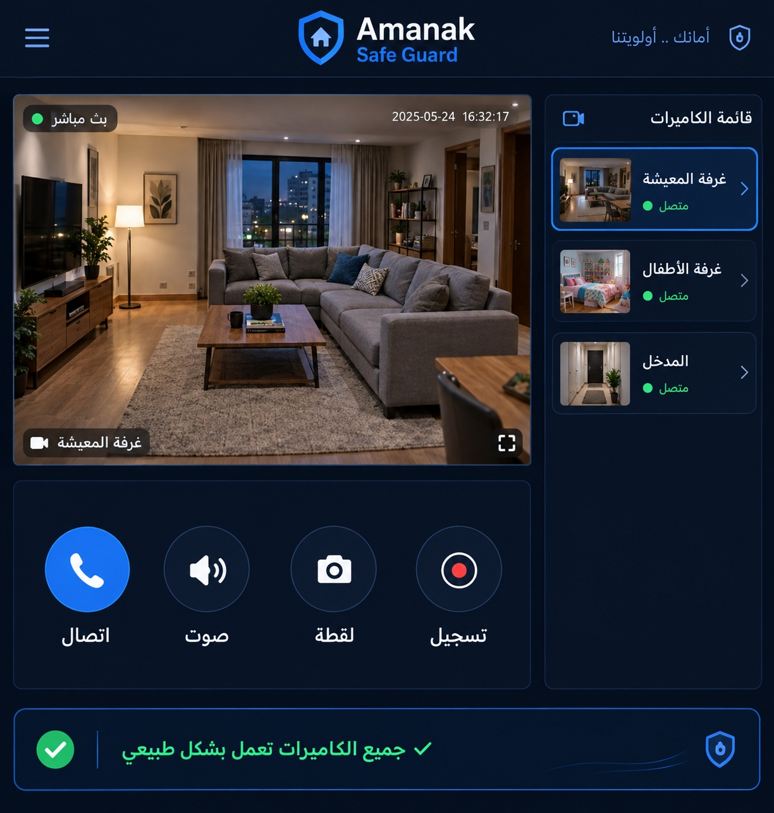

🎥
بث مباشر عالي الجودة
جودة قابلة للتعديل تلقائياً حسب سرعة الشبكة لتفادي التقطيع.
جارٍ تحضير أمانك...
راقب منزلك وتحدث مع أطفالك عن بعد — بث مباشر مشفّر بالكامل من الطرف إلى الطرف.
تفتح خدمة كاميرا المراقبة بثاً مباشراً من كاميرات منزلك داخل تطبيق أمانك نفسه، دون تطبيقات منفصلة ولا حسابات متعددة. تشاهد، تسمع، وتتحدث مع أطفالك في الاتجاهين — وكل ذلك بتشفير كامل من الطرف إلى الطرف.
وإذا حدث شيء يستدعي انتباهك، يسجّل أمانك لقطة تلقائية ويرسلها لك مع التنبيه، حتى تتحقق بعينك قبل أن تتخذ أي قرار.
المواصفات المذكورة توضيحية لعرض شكل الخدمة، وتُحدَّد نهائياً بحسب موديل الكاميرا لديك.
شاشة العرض في الأعلى، أزرار التحكم بالعربية، وقائمة الكاميرات الجانبية بحالة كل واحدة.

جودة قابلة للتعديل تلقائياً حسب سرعة الشبكة لتفادي التقطيع.
تسمع ما يجري وتتحدث مع أطفالك بنقرة واحدة كأنك في المنزل.
صورة واضحة في الإضاءة المنخفضة لمتابعة نوم الأطفال ليلاً.
تنبيه فوري مع لقطة تلقائية عند رصد حركة في نطاق محدد.
تسجيل يدوي ولقطات فورية تُحفظ في مساحة العائلة المشتركة.
قائمة جانبية بحالة كل كاميرا (متصلة / غير متصلة) وبث مباشر لكل غرفة.
البث والتسجيلات مشفّرة من الطرف إلى الطرف ولا تُخزَّن عند أي طرف ثالث.
حدّد من يمكنه المشاهدة ومن يمكنه التحكم، بصلاحيات مستقلة لكل فرد.
كل إعداد مكتوب بلغة واضحة حتى تضبط الكاميرا دون خبرة تقنية.
| الإعداد | القيم المتاحة | الوظيفة | الوصف الفني |
|---|---|---|---|
| جودة البث | عالي / متوسط / موفّر | ضبط وضوح الصورة | عالي = 1080p للواي فاي القوي، موفّر = 480p لتفادي استهلاك البيانات. |
| كشف الحركة | مفعّل / معطّل | تنبيه عند الحركة | تحديد منطقة الحساسية على الشاشة، وضبط مستوى الحساسية لتقليل التنبيهات الكاذبة. |
| الرؤية الليلية | تلقائي / يدوي / معطّل | الرؤية في الظلام | تلقائي = تشغيل تلقائي عند انخفاض الإضاءة دون إزعاج للنائمين. |
| الصوت في الاتجاهين | مفعّل / كتم | التحدث والاستماع | تفعيل الميكروفون والسماعة للجهتين، مع إمكانية الكتم أثناء المراقبة فقط. |
| وضع الخصوصية | مفعّل / معطّل | إيقاف البث مؤقتاً | يُغلق العدسة والصوت كلياً عند الحاجة لخصوصية داخل الغرفة. |
| مدة حفظ التسجيلات | 7 / 30 / 90 يوماً | مدة الاحتفاظ | تُحذف التسجيلات تلقائياً بعد المدة المحددة لتقليل حجم التخزين. |
| صلاحيات المشاهدة | ولي أمر / مشرف / مشاهد | من يرى ماذا | ولي الأمر يتحكم، المشرف يشاهد ويتحدث، المشاهد يشاهد فقط. |
القيم أعلاه إعدادات توضيحية لشكل اللوحة، وقد تختلف حسب موديل الكاميرا.
لا، الخدمة تعمل مع كاميرات المراقبة المنزلية المعروفة بعد ربطها بالحساب، وتظهر داخل التطبيق مباشرة.
نعم، عند تفعيل الصوت في الاتجاهين يتحدث الطرفان مباشرة، وهذا هو الهدف: طمأنة الطفل لا مراقبته فقط.
لا، التسجيلات مشفّرة وتُخزَّن في مساحة العائلة، وتُحذف تلقائياً بعد المدة المحددة في الإعدادات.
تظهر الكاميرا بحالة «غير متصلة» في القائمة، ويصلك تنبيه بانقطاع البث لتتحقق قبل أن تفترض الأسوأ.
نعم، يمكن منح صلاحية «مشرف» أو «مشاهد» لأي فرد آخر، وتُحدَّد بدقة ما يستطيع فعله.
تجربة مجانية 14 يوماً، وربط الكاميرات متاح في الباقة العائلية.